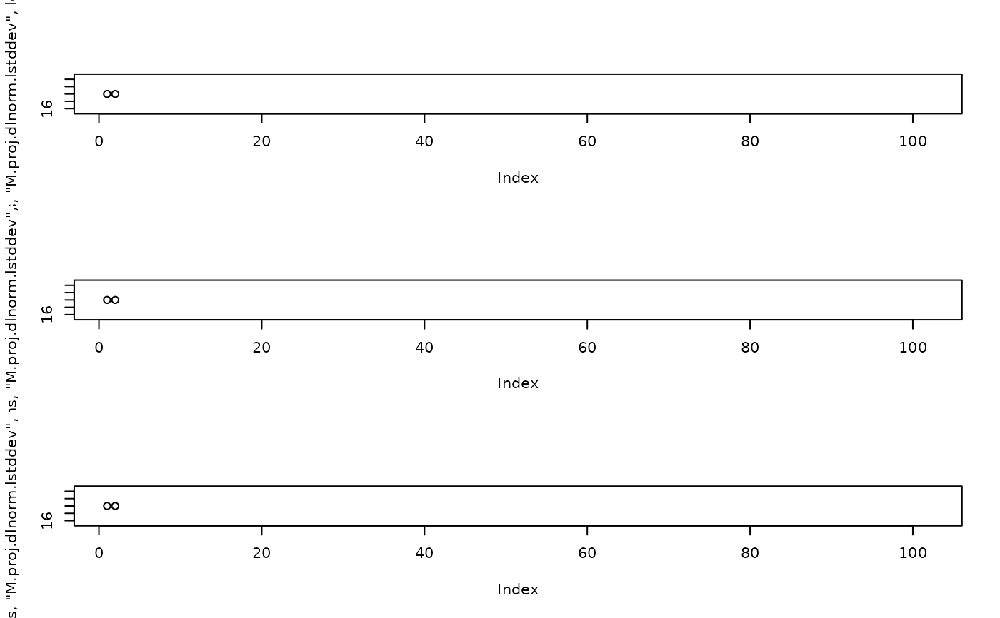
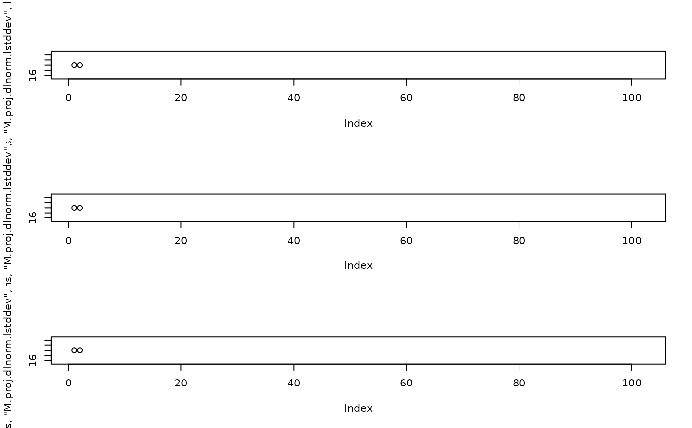

Gadget3 projected parameters
param_project.RdAdd time-based random deviates / projections
g3_param_project_dlnorm(
lmean_f = g3_parameterized("proj.dlnorm.lmean",
value = 0, optimise = FALSE,
prepend_extra = quote(param_name) ),
lstddev_f = g3_parameterized("proj.dlnorm.lstddev",
value = 1e5, optimise = FALSE,
prepend_extra = quote(param_name) ))
g3_param_project_dnorm(
mean_f = g3_parameterized("proj.dnorm.mean",
value = 0, optimise = FALSE,
prepend_extra = quote(param_name) ),
stddev_f = g3_parameterized("proj.dnorm.stddev",
value = 1, optimise = FALSE,
prepend_extra = quote(param_name) ))
g3_param_project_rwalk(
mean_f = g3_parameterized("proj.rwalk.mean",
value = 0, optimise = FALSE,
prepend_extra = quote(param_name) ),
stddev_f = g3_parameterized("proj.rwalk.stddev",
value = 1, optimise = FALSE,
prepend_extra = quote(param_name) ))
g3_param_project_ar1(
phi_f = g3_parameterized(
"proj.ar1.phi",
value = 0.8, lower = 0, upper = 1, optimise = FALSE,
prepend_extra = quote(param_name) ),
stddev_f = g3_parameterized(
"proj.ar1.stddev",
value = 1, optimise = FALSE,
prepend_extra = quote(param_name) ),
level_f = g3_parameterized(
"proj.ar1.level",
value = 0,
prepend_extra = quote(param_name) ),
lastx_f = 0L)
g3_param_project_logar1(
logphi_f = g3_parameterized(
"proj.logar1.logphi",
value = 0.8, lower = 0, upper = 1, optimise = FALSE,
prepend_extra = quote(param_name) ),
lstddev_f = g3_parameterized(
"proj.logar1.lstddev",
value = 1, optimise = FALSE,
prepend_extra = quote(param_name) ),
loglevel_f = g3_parameterized(
"proj.logar1.loglevel",
value = 0,
prepend_extra = quote(param_name) ),
lastx_f = 0L)
g3_param_project(
param_name,
project_fs = g3_param_project_rwalk(),
by_step = TRUE,
by_stock = FALSE,
weight = g3_parameterized(
paste("proj", project_fs$name, param_name, "weight", sep = "_"),
optimise = FALSE, value = 1),
scale = 1,
offset = 0,
random = TRUE )Arguments
- mean_f, stddev_f, phi_f, lmean_f, lstddev_f, logphi_f
mean / stddev in normal / logspace used for both the likelihood of deviates & to project future values. Defaults to parameters with names
(by_stock).(param_name).proj.(mean|stddev)- level_f, loglevel_f
(logspace) level (or offset) applied on top of ar1/logar1 regression. Defaults to parameter with name
(by_stock).(param_name).proj.(level|loglevel),- lastx_f
If
> 0, the setting of level_f / loglevel_f will be ignored, and the mean of the last (x) non-projection values are used as (log)level. Defaults to 0L, i.e. disabled.- param_name
Character string used to name the parameters.
- project_fs
Results of either
g3_param_project_dnorm,g3_param_project_rwalk.- by_step
Boolean, generate per-step or per-year values.
- by_stock
Prepend stock name to the projection variable, i.e. param_name. Unlike
g3_parameterized, can only beFALSEorg3_stockobjects,TRUEor"species"isn't supported.- weight
A weighting to give to the likelhood when generating total nll.
- scale, offset
Number, formula or string. Scale / offset to add to parameter values. If string, then the scale/offset will also be a parameter, equivalent to setting
scale = g3_parameterized(c(param_name, "proj", "scale")).- random
Boolean, tell TMB to treat the deviates as random variables by default. Can be changed in the parameter template.
Details
The actions will define the following variables in your model, which could be reported with g3a_report_history:
- proj_(dnorm|rwalk)_(param_name)__var
Vector of all values, both parameters & projected, by time
- proj_(dnorm|rwalk)_(param_name)__nll
Likelihood of each value
See also
Value
g3_param_project_dlnorm
Returns a "nll" & "project" formula objects for use as project_fs.
The functions compare / generate normally-distributed deviates around a mean, i.e: $$ V_t = \epsilon_{M - \frac{e^{2*\Sigma}}{2},\Sigma} $$ $$ v = exp(V) $$
- \(M\)
lmean_f /
(by_stock).(param_name).proj.lmeanparameter- \(\Sigma\)
lstddev_f /
(by_stock).(param_name).proj.lstddevparameter- \(\epsilon_{\mu,\sigma}\)
Normally distributed noise generated using
rnorm- \(v\)
Output time series
- nll
Compare values against
dnorm(x, mean_f, stddev_f)- proj
Generate new values with
rnorm(mean_f, stddev_f)
g3_param_project_dnorm
Returns a "nll" & "project" formula objects for use as project_fs.
The functions compare / generate log-normal deviates around a mean, i.e: $$ v_t = \epsilon_{\mu,\sigma} $$
- \(\mu\)
mean_f /
(by_stock).(param_name).proj.meanparameter- \(\sigma\)
stddev_f /
(by_stock).(param_name).proj.stddevparameter- \(\epsilon_{\mu,\sigma}\)
Normally distributed noise generated using
rnorm- \(v\)
Output time series
- nll
Compare values against
dnorm(x, mean_f, stddev_f)- proj
Generate new values with
rnorm(mean_f, stddev_f)
g3_param_project_rwalk
Returns a "nll" & "project" formula objects for use as project_fs.
The functions compare / generate to a random walk, i.e: $$ v_t = v_{t-1} + \epsilon_{\mu,\sigma} $$
- \(\mu\)
mean_f /
(by_stock).(param_name).proj.meanparameter- \(\sigma\)
stddev_f /
(by_stock).(param_name).proj.stddevparameter- \(\epsilon_{\mu,\sigma}\)
Normally distributed noise generated using
rnorm- \(v\)
Output time series
- nll
Compare difference between values
dnorm(x, mean_f, stddev_f)- proj
Generate new values with a delta of
rnorm(mean_f, stddev_f)
g3_param_project_ar1
Returns a "nll" & "project" formula objects for use as project_fs.
The functions compare / generate a AR1 process projecting from any existing values, i.e: $$ v_t = \phi v_{t-1} + (1 - \phi) \theta + \epsilon_{0,\sigma} $$
- \(\phi\)
phi_f /
(by_stock).(param_name).proj.phiparameter- \(\theta\)
level_f /
(by_stock).(param_name).proj.levelparameter- \(\sigma\)
stddev_f /
(by_stock).(param_name).proj.stddevparameter, if 0 1e-7 is used, so we don't return Inf- \(\epsilon_{\mu,\sigma}\)
Normally distributed noise generated using
rnorm- \(v\)
Output time series
g3_param_project_logar1
Returns a "nll" & "project" formula objects for use as project_fs.
The functions compare / generate a log-AR1 process projecting from any existing values, i.e: $$ V_t = \Phi V_{t-1} + (1 - \Phi) \Theta + \epsilon_{0 - \frac{e^{2*\Sigma}}{2},\Sigma} $$ $$ v = exp(V) $$
- \(\Phi\)
logphi_f /
(by_stock).(param_name).proj.logphiparameter- \(\Theta\)
loglevel_f /
(by_stock).(param_name).proj.loglevelparameter- \(\Sigma\)
lstddev_f /
(by_stock).(param_name).proj.lstddevparameter, if 0 1e-7 is used, so we don't return Inf- \(\epsilon_{\mu,\sigma}\)
Normally distributed noise generated using
rnorm- \(v\)
Output time series
g3_param_project
Returns a formula to choose the current value from the __var vector.
An extra G3 action will:
Populate the array with random deviates from parameters (see examples)
Project for any projection years (see
g3a_time)Add likelihood comparing random deviates to expected values
g3l_sparsesample_sumsquares
Returns a formula for use as function_f:
$$ \sum_{\it i}^{rows} w (\frac{\nu_{i}}{P_{i}} - N_{i})^2 $$
- \(N_{i}\)
"mean" column from obs_df
- \(\nu_{i}\)
Total predicted values, i.e. nll_spabund_name__model_sum
- \(P_{i}\)
Number of data points, i.e. nll_spabund_name__model_n
- \(w\)
weighting parameter, either:
\(1 / \sigma^2\), using stddev of model predicted values if
weighting = "model_stddev"\(1 / \sigma^2\), using stddev column from obs_df if
weighting = "obs_stddev"A custom forumla provided for weighting
Examples
st <- list(
imm = g3_stock(c("fish", maturity = "imm"), c(10, 20, 30)),
mat = g3_stock(c("fish", maturity = "mat"), c(10, 20, 30)) )
st2 <- g3_stock("other", c(10, 20, 30))
# Set up a projected parameter to share over both stocks
st_Mdn <- g3_param_project(
"Mdn",
g3_param_project_dnorm(),
# Append common part of stock names to parameter name
by_stock = st )
actions <- list(
g3a_time(1990, 1994, c(6,6)),
g3a_initialconditions(st$imm,
quote( 100 + stock__minlen ),
quote( 1e4 + 0 * stock__minlen ) ),
g3a_initialconditions(st$mat,
quote( 100 + stock__minlen ),
quote( 1e4 + 0 * stock__minlen ) ),
g3a_initialconditions(st2,
quote( 100 + stock__minlen ),
quote( 1e4 + 0 * stock__minlen ) ),
# Natural mortality with per-step deviates
g3a_naturalmortality(st$imm, g3a_naturalmortality_exp(st_Mdn)),
g3a_naturalmortality(st$mat, g3a_naturalmortality_exp(st_Mdn)),
# Natural mortality with per-year random walk
g3a_naturalmortality(st2, g3a_naturalmortality_exp(
g3_param_project(
"Mrw",
g3_param_project_rwalk(),
# The same value will be used for each step
by_step = FALSE,
# by_stock means the stock name will be included in parameter names
by_stock = st2 ))),
NULL )
model_fn <- g3_to_r(c(actions, list(
g3a_report_history(actions, 'proj_.*', out_prefix = NULL),
NULL )))
# Mdn has a parameter for each year/step, as well as mean/sd (added above) & likelihood weighting
grep("^fish.Mdn", names(attr(model_fn, 'parameter_template')), value = TRUE)
#> [1] "fish.Mdn.proj.dnorm.mean" "fish.Mdn.proj.dnorm.stddev"
#> [3] "fish.Mdn.1990.1" "fish.Mdn.1991.1"
#> [5] "fish.Mdn.1992.1" "fish.Mdn.1993.1"
#> [7] "fish.Mdn.1994.1" "fish.Mdn.1990.2"
#> [9] "fish.Mdn.1991.2" "fish.Mdn.1992.2"
#> [11] "fish.Mdn.1993.2" "fish.Mdn.1994.2"
# Mrw has parameters for each year
grep("^other.Mrw", names(attr(model_fn, 'parameter_template')), value = TRUE)
#> [1] "other.Mrw.proj.rwalk.mean" "other.Mrw.proj.rwalk.stddev"
#> [3] "other.Mrw.1990" "other.Mrw.1991"
#> [5] "other.Mrw.1992" "other.Mrw.1993"
#> [7] "other.Mrw.1994"
attr(model_fn, 'parameter_template') |>
g3_init_val("stst.Mdn.#.#", 0.5, lower = 0.1, upper = 0.9, random = TRUE) |>
g3_init_val("stst.Mdn.proj.dnorm.lmean", 0.1) |>
g3_init_val("stst.Mdn.proj.dnorm.lstddev", 0.001) |>
g3_init_val("other.Mrw.proj.rwalk.mean", 0) |>
g3_init_val("other.Mrw.proj.rwalk.stddev", 0.001) |>
g3_init_val("other.Mrw.#", 0.5, lower = 0.1, upper = 0.9, random = TRUE) |>
# Project forwards 20 years
g3_init_val("project_years", 20) |>
# Don't include projections in nll calculations:
# allows a stddev to be supplied for projections, but estimated freely
g3_init_val("proj_rwalk_fish_Mrw_weight", 0) |>
g3_init_val("proj_dnorm_fish_Mdn_weight", 0) |>
identity() -> params
#> Warning: g3_init_val('stst.Mdn.#.#') didn't match any parameters
#> Warning: g3_init_val('stst.Mdn.proj.dnorm.lmean') didn't match any parameters
#> Warning: g3_init_val('stst.Mdn.proj.dnorm.lstddev') didn't match any parameters
#> Warning: g3_init_val('proj_rwalk_fish_Mrw_weight') didn't match any parameters
#> Warning: g3_init_val('proj_dnorm_fish_Mdn_weight') didn't match any parameters
r <- attributes(model_fn(params))
# Values used for dnorm
plot(r$proj_dnorm_fish_Mdn__var)
# Values used for random walk
plot(r$proj_rwalk_other_Mrw__var)
 ### Plot values for an individual projection function
actions <- list( g3a_time(1990, 1991), g3_param_project("M", g3_param_project_dlnorm()) )
model_fn <- g3_to_r(c(actions, list(
g3a_report_history(actions, 'proj_.*', out_prefix = NULL),
NULL )))
attr(model_fn, 'parameter_template') |>
g3_init_val("M.proj.dlnorm.lmean", log(20)) |>
g3_init_val("M.proj.dlnorm.lstddev", log(1e-6)) |>
g3_init_val("M.#.#", 20) |>
g3_init_val("project_years", 100) |>
identity() -> params
par(mfrow=c(3, 1))
plot(attr(model_fn(params |>
g3_init_val("M.proj.dlnorm.lstddev", log(1.001)) ), "proj_dlnorm_M__var"), ylim = c(15, 25))
plot(attr(model_fn(params |>
g3_init_val("M.proj.dlnorm.lstddev", log(1e-1)) ), "proj_dlnorm_M__var"), ylim = c(15, 25))
plot(attr(model_fn(params |>
g3_init_val("M.proj.dlnorm.lstddev", log(1e-2)) ), "proj_dlnorm_M__var"), ylim = c(15, 25))

### Plot values for an individual projection function
actions <- list( g3a_time(1990, 1991), g3_param_project("M", g3_param_project_dlnorm()) )
model_fn <- g3_to_r(c(actions, list(
g3a_report_history(actions, 'proj_.*', out_prefix = NULL),
NULL )))
attr(model_fn, 'parameter_template') |>
g3_init_val("M.proj.dlnorm.lmean", log(20)) |>
g3_init_val("M.proj.dlnorm.lstddev", log(1e-6)) |>
g3_init_val("M.#.#", 20) |>
g3_init_val("project_years", 100) |>
identity() -> params
par(mfrow=c(3, 1))
plot(attr(model_fn(params |>
g3_init_val("M.proj.dlnorm.lstddev", log(1.001)) ), "proj_dlnorm_M__var"), ylim = c(15, 25))
plot(attr(model_fn(params |>
g3_init_val("M.proj.dlnorm.lstddev", log(1e-1)) ), "proj_dlnorm_M__var"), ylim = c(15, 25))
plot(attr(model_fn(params |>
g3_init_val("M.proj.dlnorm.lstddev", log(1e-2)) ), "proj_dlnorm_M__var"), ylim = c(15, 25))
